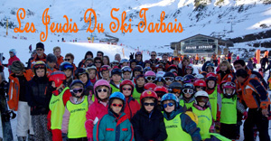

« Les Jeudis du Ski Tarbais » est une association créée en 1964 à destination des enfants de 6 à 17 ans, encadrés par 10 moniteurs bénévoles recyclés annuellement et 12 moniteurs bénévoles titulaires du Brevet de Moniteur Fédéral 1er et 2e degré de la FFS, ainsi que des moniteurs ESF de la station de Luz Ardiden.